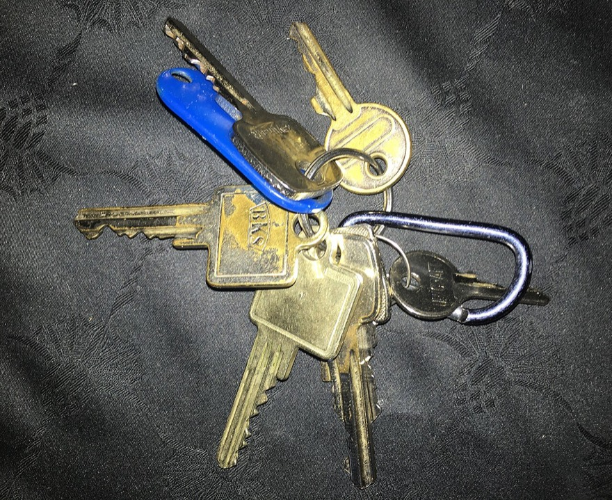

1생각 열기
2교과서로 배우기
코드 아래 💡 코드 설명을 펼쳐 보고, 빈칸이 있으면 채운 뒤 실행해 보세요.
교과서 · Ⅲ 2-1 탐색 기반 알고리즘의 이해
탐색 알고리즘을 고르는 두 가지 기준
탐색 기반 알고리즘은 상태 공간을 돌아다니며 목표 상태를 찾는 알고리즘이에요. 설계할 때는 두 가지를 먼저 살펴요.
- 찾아볼 곳이 어떤 모양인가? (탐색 공간의 구조)
한 줄로 늘어서 있으면 선형, 갈림길이 있으면 비선형이에요. - 어디까지 찾아볼 것인가? (탐색 범위)
하나도 빠짐없이 다 보면 전체 탐색, 볼 필요 없는 곳을 빼고 보면 부분 탐색이에요.
| 기준 | 구분 | 어떤 경우 | 쉬운 비유 | 알고리즘 |
|---|---|---|---|---|
| 탐색 공간의 구조 | 선형 탐색 | 다음으로 갈 곳이 한 방향으로만 이어진 단순한 구조 (리스트·큐·스택) | 한 줄로 늘어선 사물함 | 순차 탐색, 이진 탐색 |
| 비선형 탐색 | 길이 여러 갈래로 갈라지는 복잡한 구조 (트리·그래프) | 갈림길이 많은 미로 | 깊이 우선 탐색, 너비 우선 탐색 | |
| 탐색 범위 | 전체 탐색 | 가장 좋은 답을 찾으려고 모든 상태를 다 살펴야 할 때 | 방을 구석구석 다 뒤지기 | 브루트 포스 — 최적해 보장, 그러나 느림 |
| 부분 탐색 | 조건에 맞는 일부만 살펴도 충분할 때 | “부엌에서 봤어”라는 단서로 부엌만 찾기 | 이진 탐색, 탐욕법, 분기 한정법 — 빠르지만 주의 필요 |
다음 예시에는 어떤 탐색이 어울릴까? (선형/비선형 · 전체/부분)
- 정렬된 배열 또는 순차적 리스트에서 특정 항목 찾기
- 회사의 조직도에서 특정 직원을 찾기 위해 상위 관리자부터 시작하여 부서별로 하위 직원들을 탐색하기
- 진로 탐색 사이트에서 특정 조건에 맞는 학과 찾기
이렇게 생각해 볼 수 있어요
① 한 줄로 늘어선 자료이니 선형, 정렬되어 있어 절반씩 버릴 수 있으니 부분 탐색(이진 탐색)이 가능해요. ② 조직도는 위에서 아래로 가지가 갈라지는 트리이니 비선형, 어느 부서에 있는지 모르면 차례로 모두 살펴야 하니 전체 탐색이에요. ③ ‘이과 계열’, ‘수도권’ 같은 조건으로 후보를 걸러 내므로 부분 탐색이에요. 자료를 어떻게 구조화하느냐에 따라 선형으로도 비선형으로도 볼 수 있어요. 정답보다 왜 그렇게 골랐는지 이유를 말하는 것이 중요해요.
전체 탐색 — 하나도 빠짐없이 다 해 보기

이렇게 가능한 경우를 하나도 빠짐없이 시도해 보는 방법이 전체 탐색이고, 브루트 포스 알고리즘(brute force)이라고도 해요. ‘brute’는 ‘단순히, 순전히’, ‘force’는 ‘힘’이라는 뜻이에요. 꾀를 부리지 않고 힘으로 밀어붙인다는 말이죠.
틀릴 수가 없다
모든 경우를 다 보기 때문에 가장 좋은 답(최적해)을 반드시 찾아요. 생각하기 쉽고 만들기도 쉬워요.
경우가 많으면 너무 느리다
살펴볼 경우가 많아지면 시간과 메모리를 엄청나게 써요. 그래서 작은 문제나 경우의 수가 적은 문제에 써요.
전체 탐색 알고리즘을 설계하는 다섯 단계
- 문제 정의 — 문제를 정확히 이해하고, 가능한 답의 범위를 정해요.
- 상태 공간 생성 — 가능한 모든 상태(답의 후보)를 늘어놓아요.
- 순회 방법 결정 — 상태 공간을 빠짐없이 도는 방법을 정해요. 보통 반복문이나 재귀 함수를 써요.
- 유효성 검사 — 각 상태가 문제의 조건을 만족하는지 확인해요.
- 최적의 해 선택 — 조건을 만족하는 것 중 가장 좋은 답을 골라요.
선형 전체 탐색 — 순차 탐색
한 줄로 늘어선 자료를 처음부터 끝까지 하나씩 확인하는 방법을 순차 탐색이라고 해요. 리스트 [9, 5, 8, 3, 7]에서 8을 찾아볼까요? 할 수 있는 행동은 ‘오른쪽 칸으로 넘어가기(right)’ 하나뿐이에요.
def linear_search(arr, target):
for i in range(len(arr)): # 0번 칸부터 마지막 칸까지 차례로
if : # 찾는 값과 같으면
return i # 그 위치(인덱스)를 돌려주고 끝
# 끝까지 없으면 -1
arr = [9, 5, 8, 3, 7]
target = 8
result = linear_search(arr, target)
print(f'Target found at index: {result}')
어떤 양의 정수의 각 자릿수가 일정한 간격(등차수열)을 이루면 그 수를 ‘한수’라고 해요.
- 123 → 1, 2, 3 (1씩 커짐) → 한수 ○
- 975 → 9, 7, 5 (2씩 작아짐) → 한수 ○
- 124 → 1과 2의 차이는 1, 2와 4의 차이는 2 → 한수 ✗
- 한 자리 수와 두 자리 수는 모두 한수예요. (비교할 간격이 하나뿐이거나 없으니까요)
정수 N이 주어졌을 때 1 이상 N 이하의 수 중 한수의 개수를 구해 보자. 전체 탐색으로 풀려면 1부터 N까지 차례로 살펴보면서 한수인 것만 세면 돼요.
def is_hansu(number):
if number < 100:
return True # 한/두 자리 수는 모두 한수
str_num = str(number) # 자릿수를 다루기 쉽게 글자로 바꿈
diff1 = int(str_num[0]) - int(str_num[1]) # 첫째-둘째 자리 차이
diff2 = int(str_num[1]) - int(str_num[2]) # 둘째-셋째 자리 차이
return # 두 차이가 같으면 한수
def count_hansu(N):
count = 0
for i in : # 1부터 N까지 순차 탐색
if is_hansu(i):
count += 1
return count
N = int(input('N을 입력하세요: '))
print(count_hansu(N))
N에 999를 넣으면 몇 개일까요?
144개예요. 1~99는 모두 한수라서 99개, 100~999 가운데 한수는 111, 123, 135, 147, 159, 210, 222 … 처럼 45개가 있어요.
순차 탐색 따라가기 — 앞에서부터 하나씩
3직접 해 보기
코드를 고쳐서 ▶ 실행하면 출력이 맞는지 바로 알려 줘요. 막히면 힌트부터 열어 보세요.
없는 값은 몇 번 만에 알까
순차 탐색에 비교 횟수를 세는 기능을 넣었어요. 끝까지 못 찾았을 때 돌려줄 값을 ___에 채워 보세요(위치는 -1). 맨 앞의 값, 맨 뒤의 값, 없는 값을 찾을 때 비교 횟수를 비교해 보세요.
def linear_search(arr, target):
count = 0
for i in range(len(arr)):
count += 1 # 비교 한 번
if arr[i] == target:
return i, count
return ___
arr = [9, 5, 8, 3, 7]
for t in (9, 8, 7, 6):
print(f'{t} 찾기 → 위치 {linear_search(arr, t)[0]}, 비교 {linear_search(arr, t)[1]}번')힌트
찾았을 때처럼 (위치, 비교 횟수) 두 값을 돌려줘야 해요. 위치는 -1이에요.
정답 코드 보기
def linear_search(arr, target):
count = 0
for i in range(len(arr)):
count += 1 # 비교 한 번
if arr[i] == target:
return i, count
return -1, count
arr = [9, 5, 8, 3, 7]
for t in (9, 8, 7, 6):
print(f'{t} 찾기 → 위치 {linear_search(arr, t)[0]}, 비교 {linear_search(arr, t)[1]}번')가짜 한수가 섞였어요
100~300 사이의 한수를 모두 찾는 전체 탐색이에요. 그런데 101, 121 같은 한수가 아닌 수가 섞여 나와요. diff2를 구하는 식의 실수를 찾아 고쳐 보세요.
def is_hansu(number):
if number < 100:
return True
s = str(number)
diff1 = int(s[0]) - int(s[1])
diff2 = int(s[2]) - int(s[1])
return diff1 == diff2
result = []
for i in range(100, 301): # 100 ~ 300을 하나씩 다 살펴보기
if is_hansu(i):
result.append(i)
print(result)
print(len(result), '개')힌트
diff1은 (첫째 − 둘째)예요. diff2도 같은 방향으로 (둘째 − 셋째)여야 비교가 맞아요.
정답 코드 보기
def is_hansu(number):
if number < 100:
return True
s = str(number)
diff1 = int(s[0]) - int(s[1])
diff2 = int(s[1]) - int(s[2])
return diff1 == diff2
result = []
for i in range(100, 301): # 100 ~ 300을 하나씩 다 살펴보기
if is_hansu(i):
result.append(i)
print(result)
print(len(result), '개')합이 10인 카드 짝 찾기
카드 6장 중 두 장을 골라 합이 10이 되는 짝을 전체 탐색으로 모두 찾아요. ① 상태 공간: 서로 다른 두 장의 모든 짝 ② 유효성 검사: 합이 10인가? 짝을 하나 볼 때마다 checked를 1씩 늘리고, 맞는 짝은 리스트에서 앞에 있는 카드를 먼저 써서 (앞 카드, 뒤 카드) 모양의 튜플로 found에 넣어요.
cards = [3, 7, 1, 9, 4, 6]
checked = 0
found = []
# 여기에: 이중 반복문으로 i < j 인 모든 짝 (cards[i], cards[j]) 살펴보기
print('합이 10인 짝:', found)
print('살펴본 짝의 수:', checked)힌트
for i in range(len(cards)): 안에 for j in range(i + 1, len(cards)): 를 쓰면 같은 짝을 두 번 보지 않아요.
정답 코드 보기
cards = [3, 7, 1, 9, 4, 6]
checked = 0
found = []
for i in range(len(cards)):
for j in range(i + 1, len(cards)):
checked += 1
if cards[i] + cards[j] == 10:
found.append((cards[i], cards[j]))
print('합이 10인 짝:', found)
print('살펴본 짝의 수:', checked)4확인 문제
Q1회사 조직도(트리)에서 어느 부서인지 모르는 직원을 찾는 탐색은?
해설 — 조직도는 가지가 갈라지는 트리(비선형)이고, 단서가 없으니 모두 살펴야(전체 탐색) 해요.
Q2전체 탐색(브루트 포스)에 대한 설명으로 옳지 않은 것은?
해설 — 경우가 많아지면 시간과 메모리를 엄청나게 써요. 그래서 작은 문제에 써요.
5한 줄 정리
순차 탐색의 시간 복잡도가 O(n)인 이유를 ‘최악의 경우’라는 말을 넣어 적어 보세요.